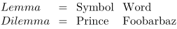
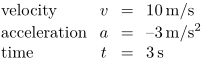

Contents
Summary
The instances of \starttabulate ... \stoptabulate are used for special tabulated material.
Instances
| \startlegend ... \stoplegend | |
| \startfact ... \stopfact |
Settings instance
| \startTABULATE[...][...=...,...] ... \stopTABULATE | |
| [...] | name |
| ...=...,... | inherits from \setuptabulate |
Description
Examples
Legends
-
\startlegend \leg Lemma\\Symbol\\Word\\ \leg Dilemma\\Prince\\Foo bar baz\\ \stoplegend
- 
Facts
Complementary to legends is a command that displays facts in a consistent way when formulae are used for calculations.
-
\startfact \fact velocity \\ v \\ \unit{10 m/s} \\ \fact acceleration \\ a \\ \unit{-3 m/s^2} \\ \fact time \\ t \\ \unit{3 s} \\ \stopfact
- 
The two last columns are in mathematical mode, the last column displays text in the normal font.